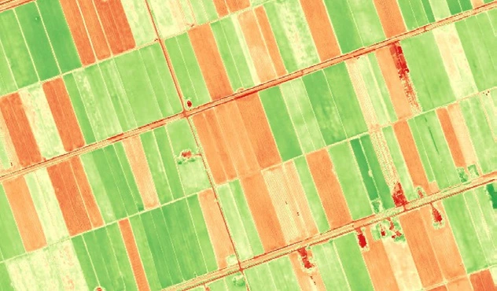
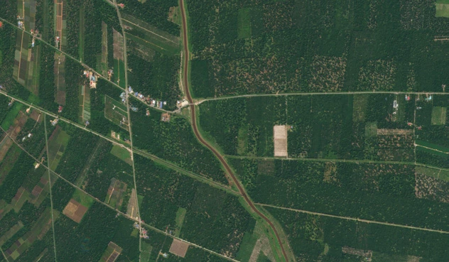
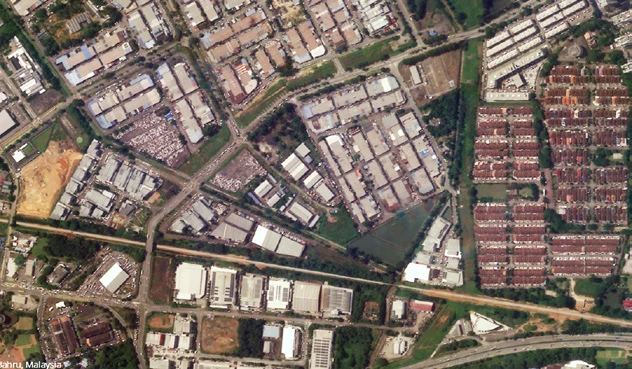
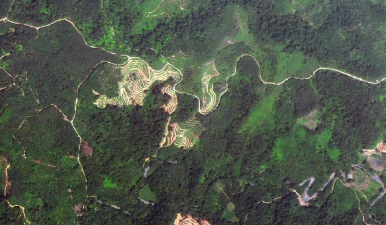
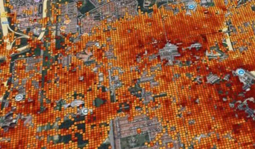
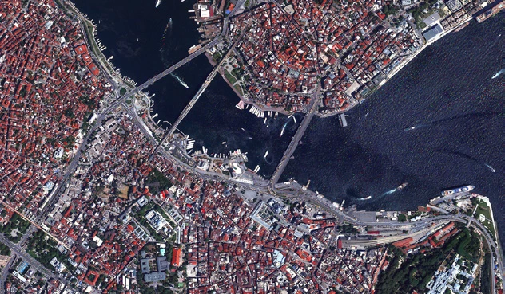
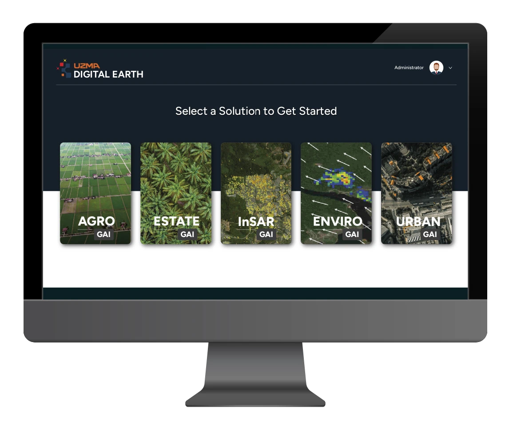
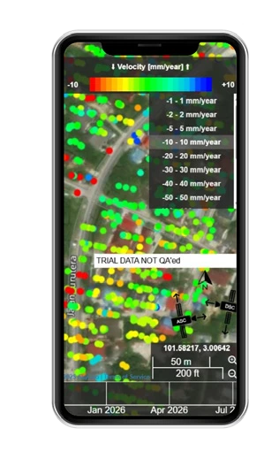
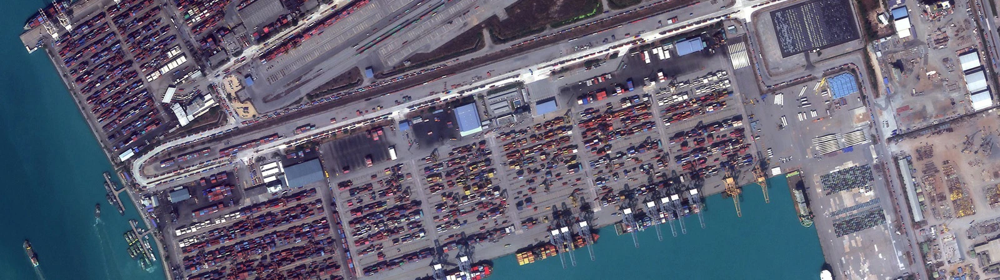

Uzma Digital Earth connects imagery, sensors and locally trained AI.

One platform. Many perspectives.
A digital platform using satellite imagery, advanced sensors and locally trained AI to deliver insights across agriculture, environmental and asset monitoring, urban planning and plantation management.
Platform features
- Cloud-based platform integrating AI and satellite imagery.
- Tailored to local parameters.
- Real-time analytics and visualisation.
- Modular architecture for industry-specific applications.
Applications shown in the brochure
- Agriculture management
- Plantation management
- Urban planning
- Environmental management
- Ground movement
- Defense & maritime
In pictures
{kind=link}
{kind=link}
{kind=link}

{kind=link}
{kind=link}

{kind=link}
{kind=link}

{kind=link}
{kind=link}

{kind=link}
{kind=link}

{kind=link}
{kind=link}

{kind=link}
{kind=link}

{kind=link}
{kind=link}

{kind=link}

{kind=link}
{kind=link}
{kind=link}
{kind=link}

{kind=link}
Read the complete source transcript
Digital platform that leverages satellite imagery, advanced sensors, and locally- trained AI to deliver deep insights across sectors, including agriculture, environmental and assets monitoring, urban planning, and plantation management.
PLATFORM FEATURES
Cloud-based platform integrating AI and satellite imagery
Tailored to local parameters Real-time analytics and visualization
Modular architecture for industry- specific applications
AGRICULTURE MANAGEMENT
PLANTATION MANAGEMENT
URBAN PLANNING
ENVIRONMENTAL MANAGEMENT
GROUND MOVEMENT
DEFENSE & MARITIME